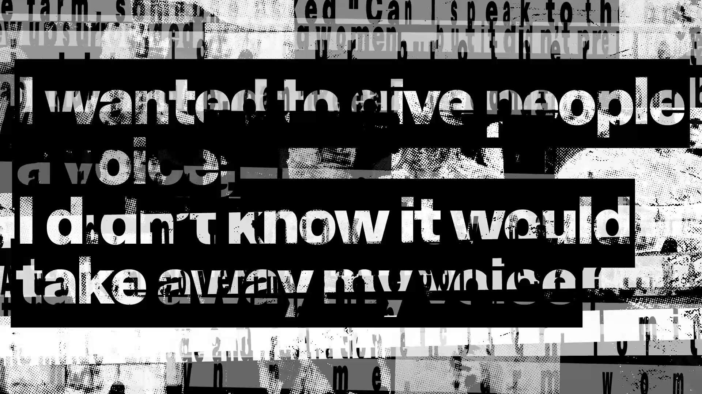
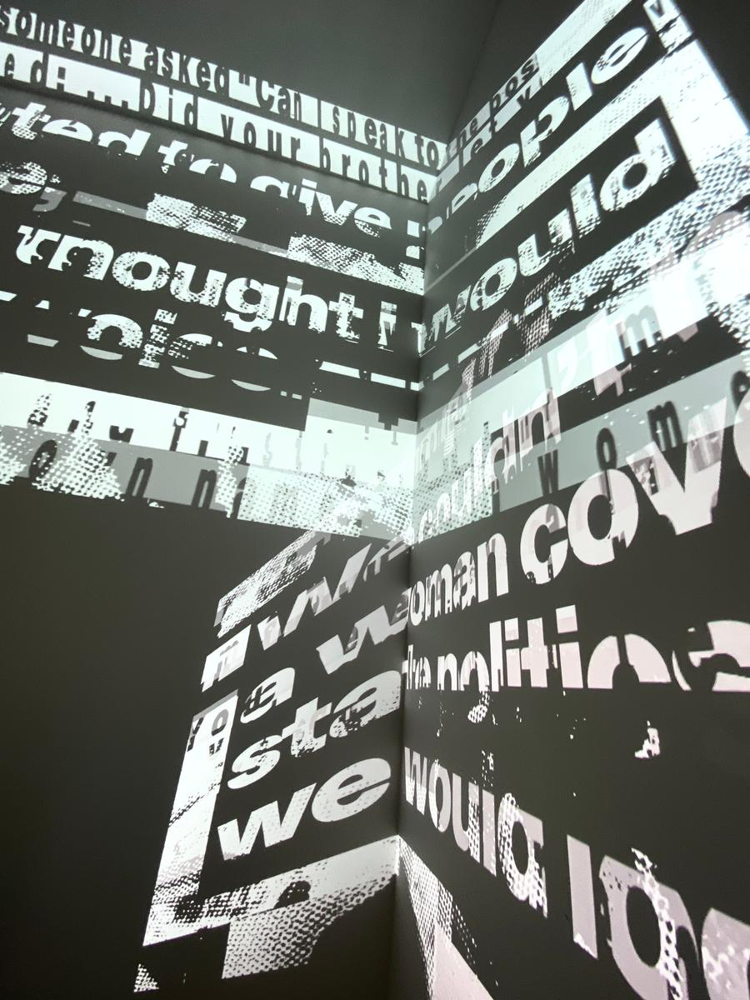
'Landscape of Words'
Video work
2024
Ellen Koshland in collaboration with Jared Amuso
Radical Generosity
Haydens Gallery
Curated by Kathryne Genevieve Honey
haydens.gallery
Ellen Koshland's artist statement
We inhabit a hidden landscape of words. The words impact on our bodies, nourishing, challenging or diminishing us. The jingle goes "Sticks and stones may break my bones …But names will never hurt me". But words do hurt. Words are powerful. They can incite violence or unnerve in insidious ways. Or they can nurture and clarify.
The quotes in the video work come from interviews conducted with women in positions of expertise and authority. Women in world of business, farm, police, church, the law courts, journalism and health.
Each of these women has had to find ways to navigate a landscape where double standards, resistance and bias still exist on a daily basis.
What would it take to have a generosity in our daily exchanges, to exercise a radical respect for every other in the words we use?
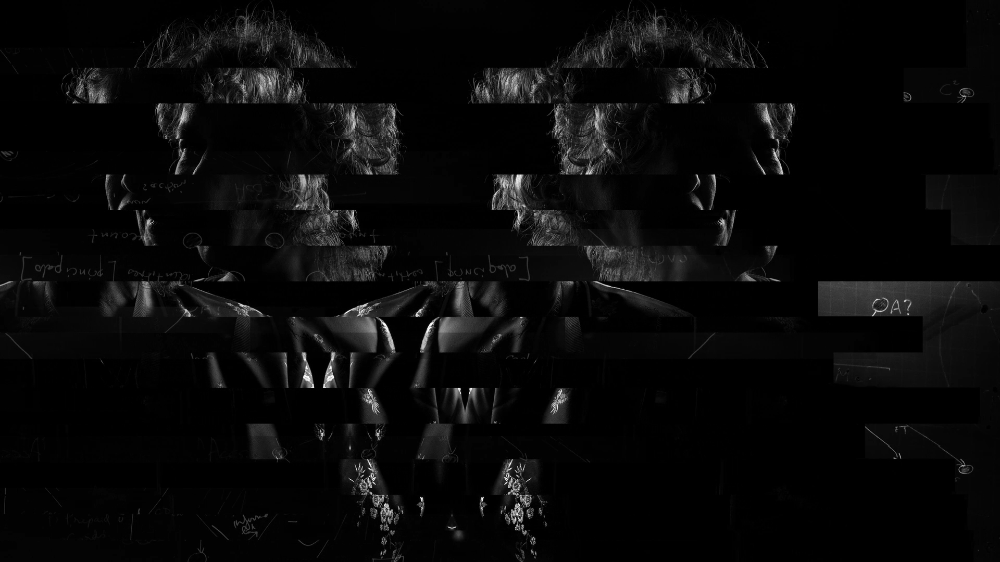
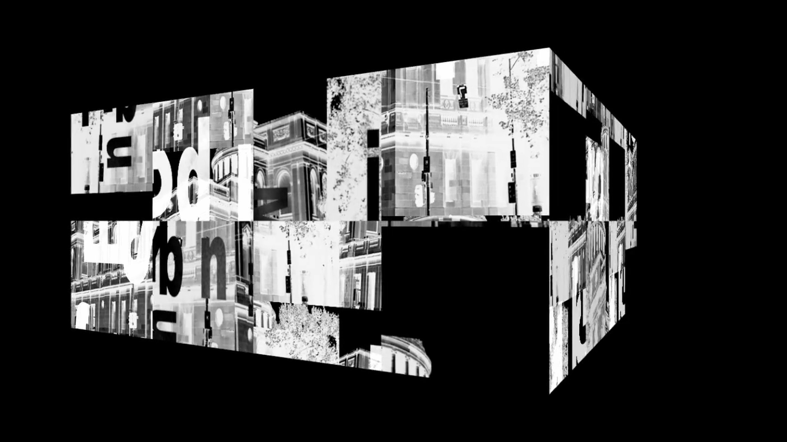
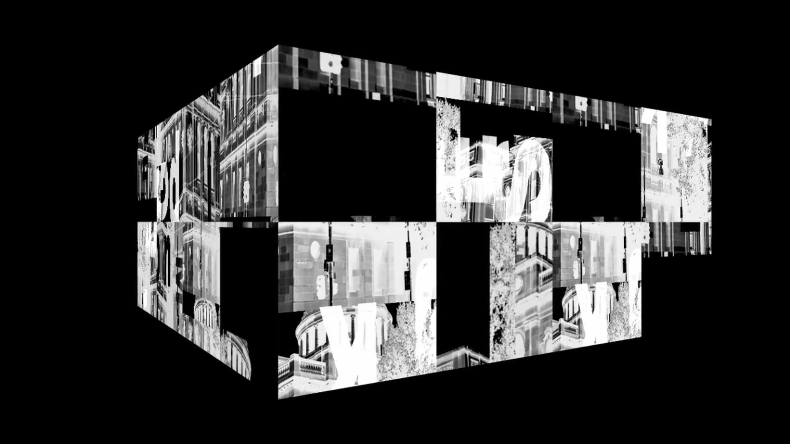
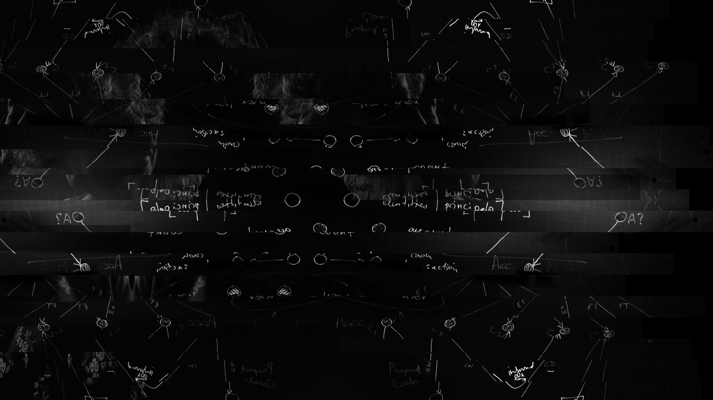
'alphabet syntax'
2025
Ellen Koshland in collaboration with Jared Amuso
Sign O' The Times
Sarah Scout Presents
sarahscoutpresents.com
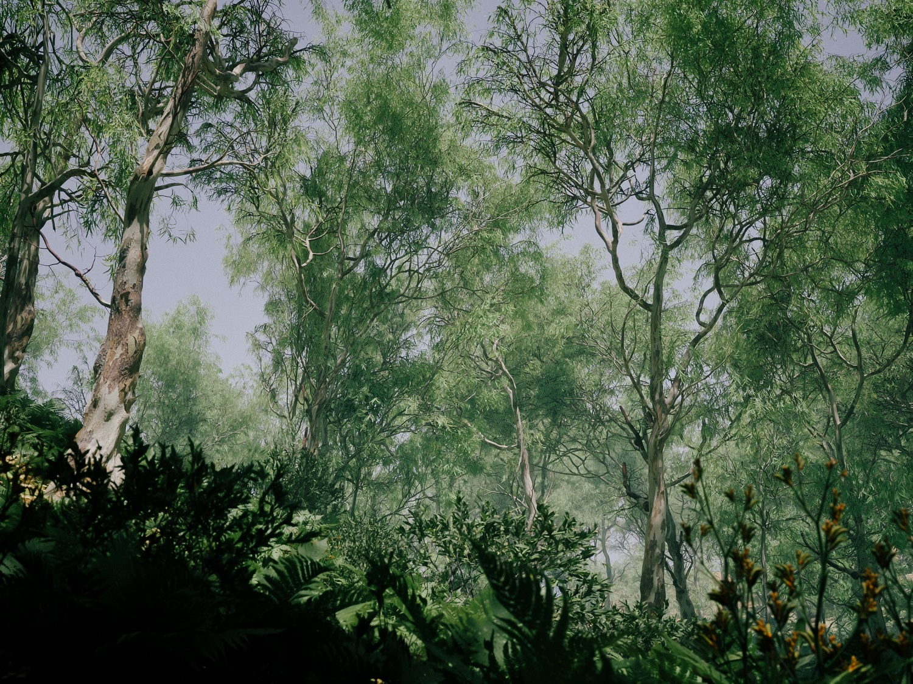
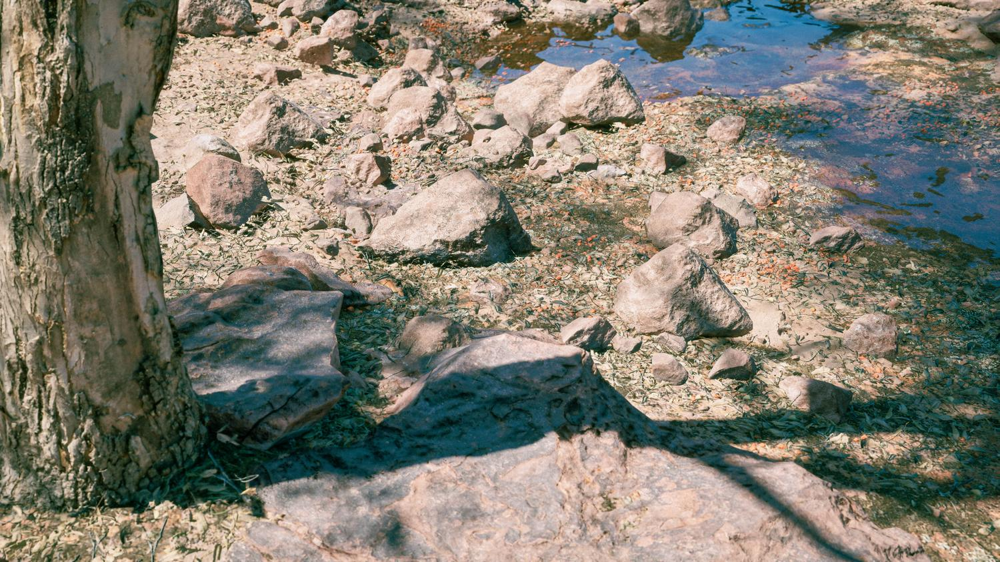
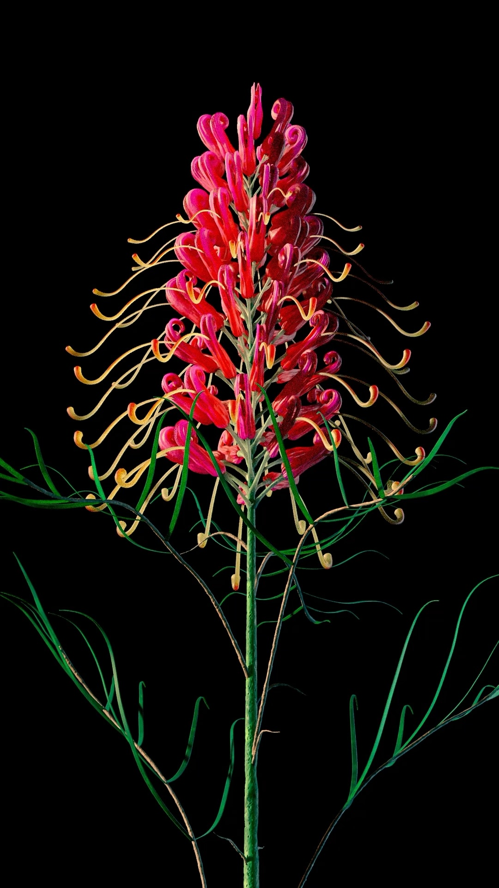
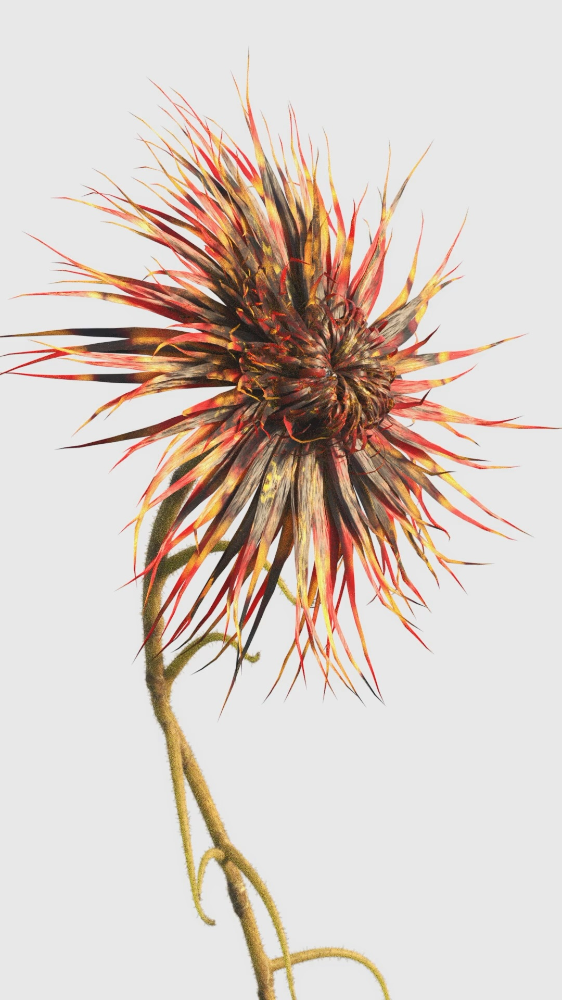
Personal Works
2025–2026
Houdini, Unreal Engine
Procedural explorations in Houdini and Unreal Engine.
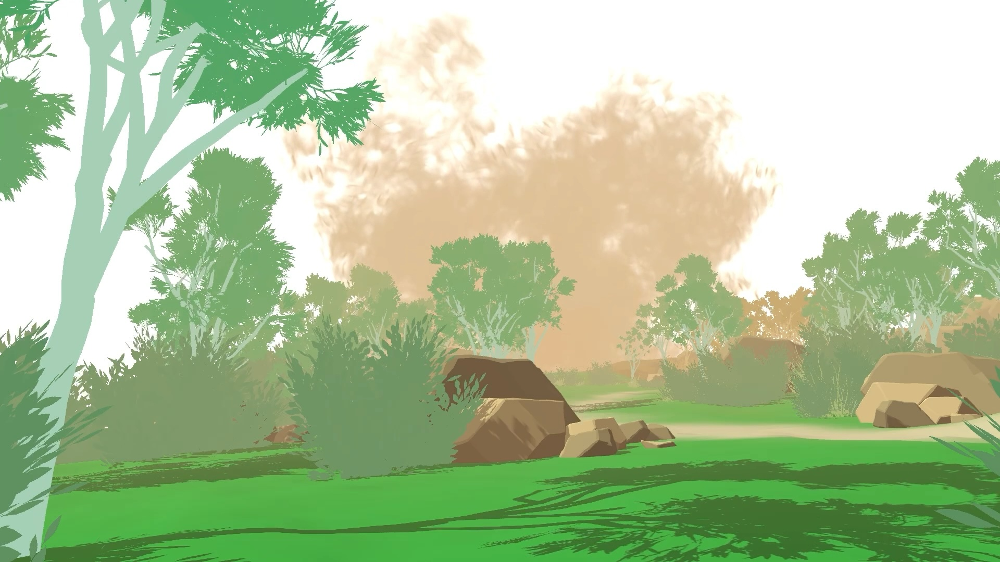
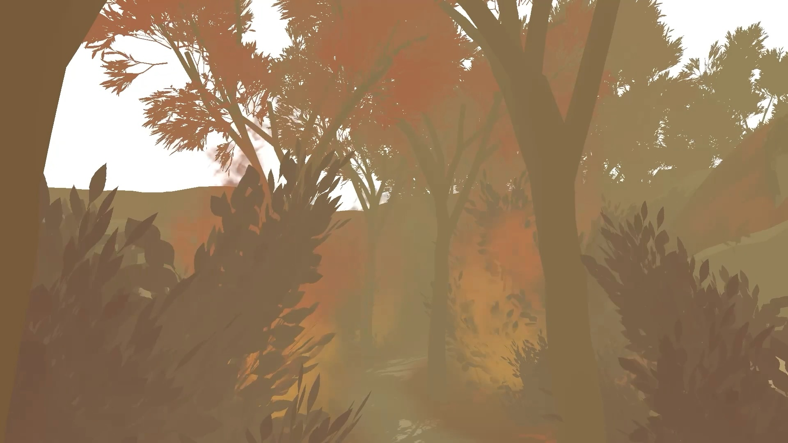
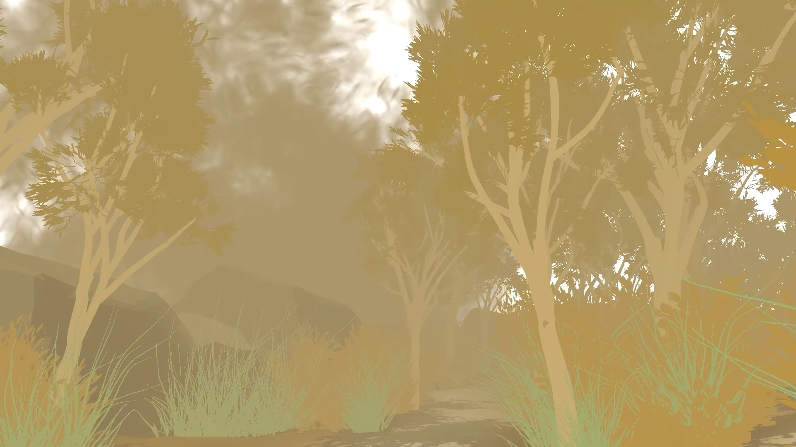
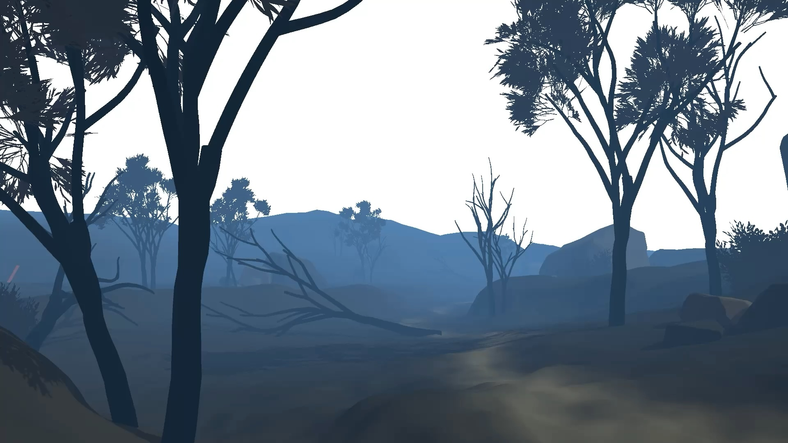
'Spatial Memory'
Immersive environment
2025–2026
Personal work
Houdini, Unreal Engine
'Spatial Memory' reflects on memory and emotional transformation through an immersive environment inspired by my experience of the 2019 Cudlee Creek bushfires. Moving through four shifting states: calm, anticipation, fear, and reflection, the work translates personal memory into a shared, regenerative space. At its core, the work explores how space can hold emotion, using immersion and rhythm to convey the tension between loss and renewal.
Strategy
Rather than aiming for a literal retelling, the design emphasises atmosphere, scale, and sound to evoke reflection, memory, and recovery. Colour shifts, fog density, and spatial arrangements are carefully considered to guide the player through an abstract emotional landscape, creating a sense of immersion and contemplation.
Design
Moving through the environment reveals how narrative and spatial design interact. Adjustments to scale, pacing, and the arrangement of spaces evolve naturally as the world takes shape, allowing the experience to feel guided yet open. Subtle transitions between areas encourage moments of pause and reflection, while environmental boundaries maintain a delicate balance between exploration and focus.
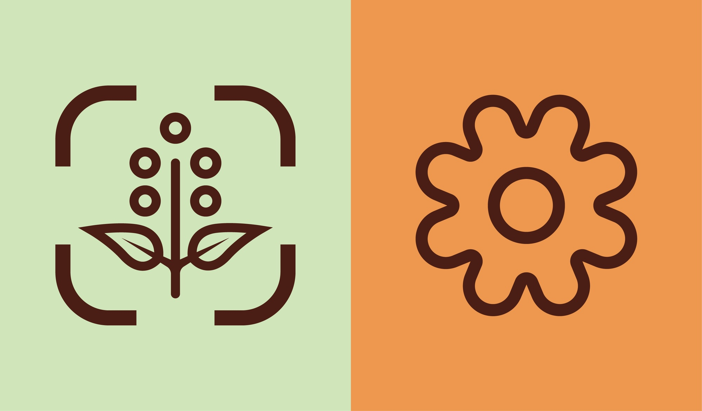
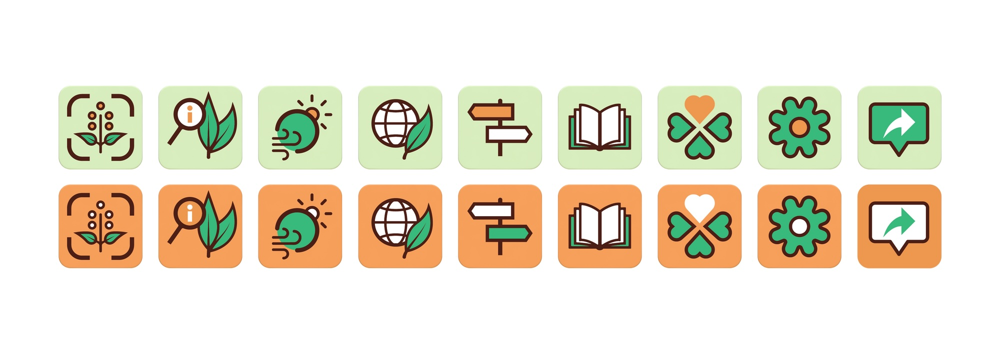
'Botanic Language'
Interactive symbol suite
2025–2026
Personal work
'Botanic Language' investigates the theme of climate through a series of interactive symbols inspired by Melbourne's botanic gardens. Each icon translates the relationship between nature and process into a distilled, sensory experience, using simplicity and rhythm to evoke curiosity and connection.
Strategy
The icon suite establishes a visual system that encourages intuitive interaction through rhythm, clarity, and consistency. Each icon is designed to function both independently and as part of a cohesive language, balancing simplicity with conceptual depth.
Design
The visual language evolved through iterative sketching and digital refinement, balancing clarity with expression. Careful adjustments to line weight, spacing, and proportion established a sense of rhythm that connected each icon within the larger suite. The restrained blue-green palette, accented with warm orange, was chosen to evoke harmony and subtle energy while maintaining legibility across environmental-based contexts. Integrated sound elements extend this visual rhythm into a multi-sensory experience, creating a quiet interaction between sight and sound that enhances engagement.